Your music. Your server. Your radio.
leon.music turns a folder of songs into your own streaming service, with search, charts, personal mixes, synced lyrics, friends, Rewind and live radio stations. It runs on your computer: no cloud, no subscription, no tracking.
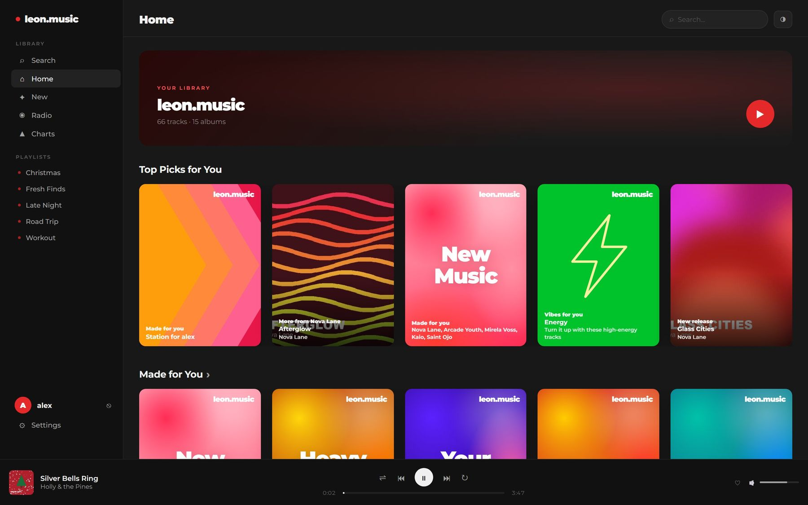
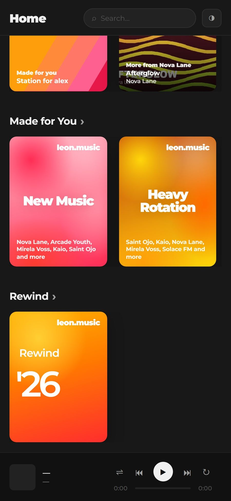
A streaming service you actually own
Point leon.music at your music folder and it builds the rest from your tags and your listening.
Search & browse
Instant results for songs, artists and albums, plus a tile for every genre and decade on your server.
New
Fresh songs, trending tracks, new albums and updated playlists, all on one page.
Charts
Weekly, monthly and all-time Top 50s, genre charts and artist charts, built from what people actually play.
Made for You
New Music, Heavy Rotation, Your Essentials, Get Up! and Chill: personal mixes that refresh every day.
Rewind
Weekly stats, a yearly Rewind with top artists and songs, a playlist for every year, and an End of Year Rewind.
Live radio
Run your own scheduled radio stations and broadcast them through Icecast to anyone, anywhere.
Likes & playlists
Heart songs into Liked Songs, build your own playlists, drag to reorder and share them with everyone.
Synced lyrics
Full-screen lyrics that follow the song, from your .lrc files, your tags or the free LRCLIB database.
Profiles & friends
Profiles, friend requests, see what friends are playing, and a Friends Mix made from their listening.
Find anything in seconds
Type to search your whole library, or browse categories built from your music.
- Genre pages with feature cards, playlists, top songs, albums and artists.
- Decades from the 60s to now, using your files' release years.
- Missing years? The admin panel can look them up for you.

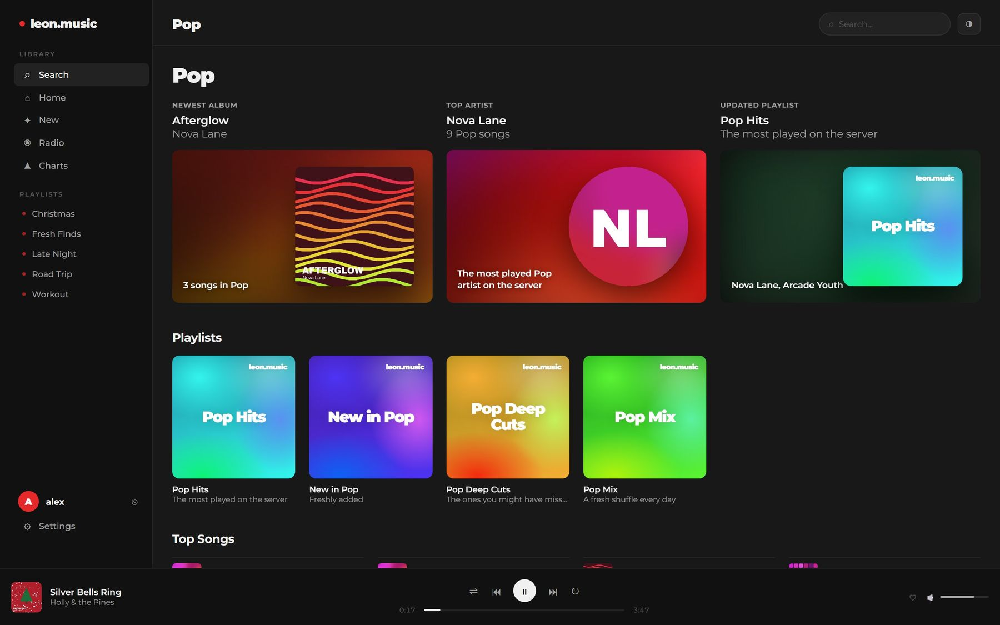
Charts from your own listening
Every song counts once someone has listened for about 30 seconds. leon.music turns those plays into charts.
- Top 50 for this week, this month and all time, with ▲▼ movement and NEW entries.
- Charts for each genre and top artist, with automatically generated covers.
- Trending songs show up on the New page.
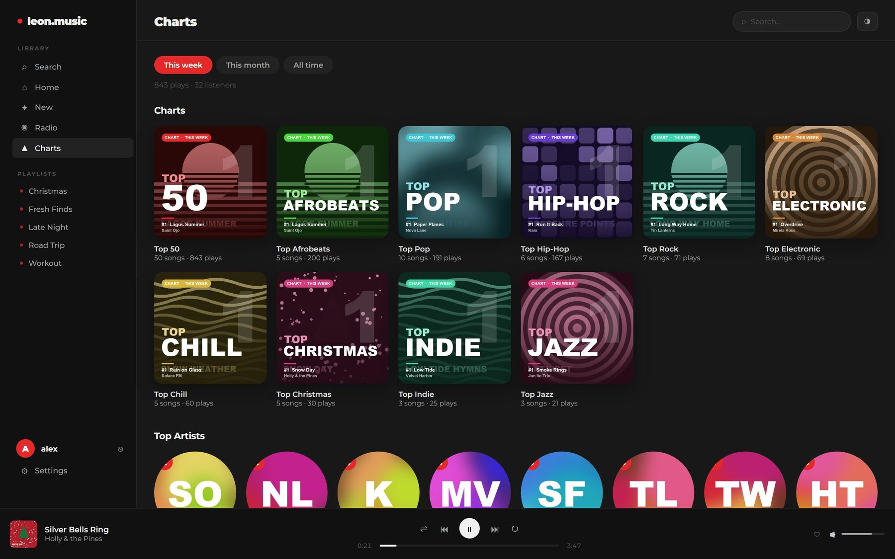
Mixes for everyone on your server
Give friends and family their own accounts. Each person picks the genres they love and gets a home page made for them.
- Made for You mixes that refresh daily.
- Top Picks once someone has listened for a while: their station, more from favourite artists, new releases.
- Your own logo on every generated cover.
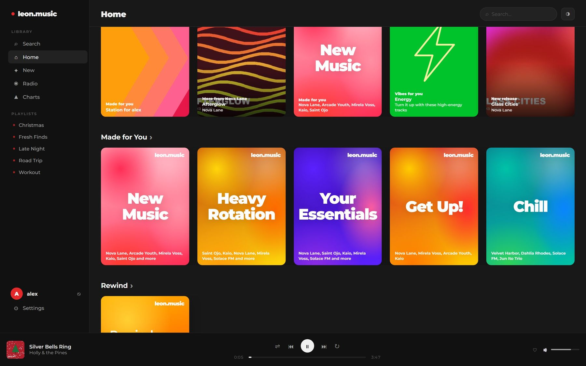
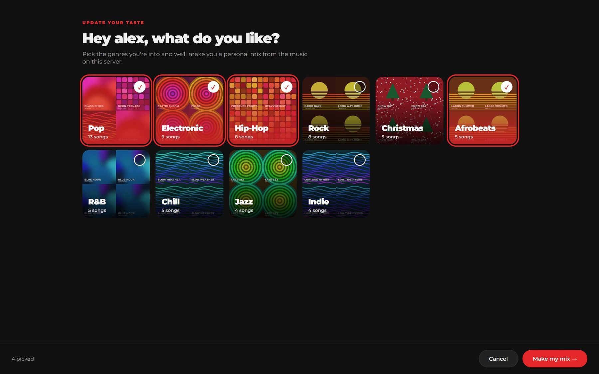
Start your own radio stations
Pick stations, schedule your playlists and go live through your Icecast server, all in a two-minute setup wizard.
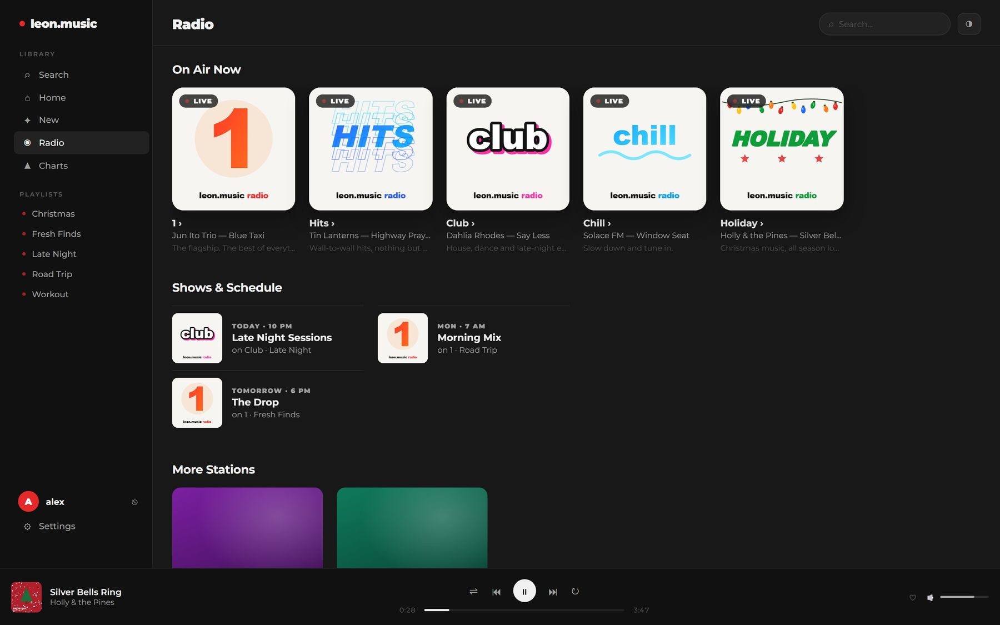
Ready-made or custom
Stations like 1, Hits, Club, Chill and Holiday come with original logos, or design your own with any name, colour and style.
Shows on a schedule
Normal rotation plus timed shows, like a late-night mix on weekends. Every station gets a schedule page.
Set it and forget it
Any audio format is converted for broadcast, track titles update live, and stations reconnect on their own after restarts.
New to Icecast? The live radio guide covers installing it, every setup step, and what to do when something goes wrong.
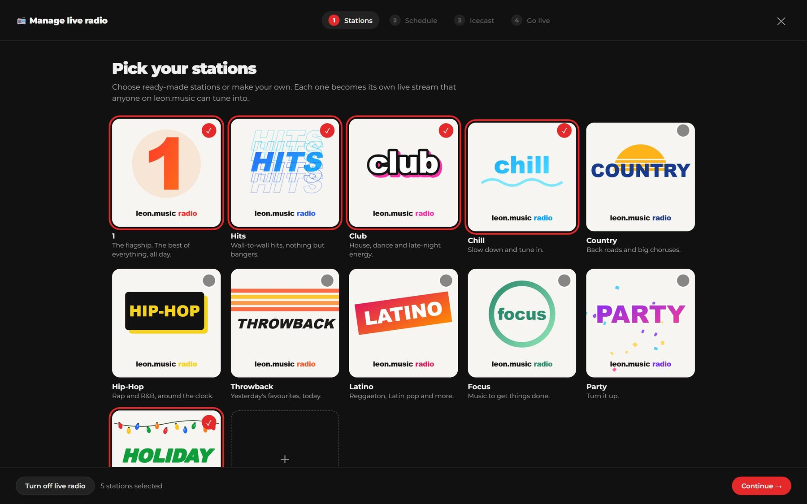
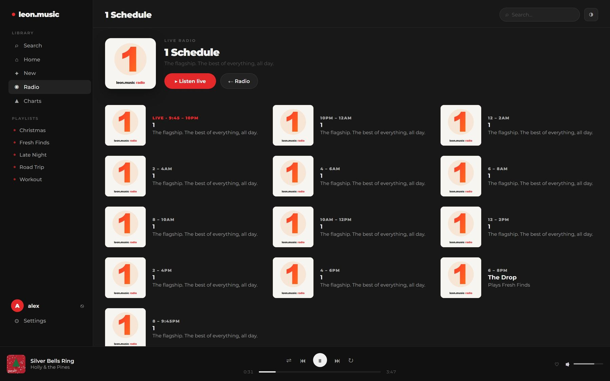
See how you listen
Every account gets its own listening stats.
- Weekly Rewind: minutes listened, your top artists and songs, a day-by-day chart and new discoveries.
- Rewind by year and month, plus a playlist of your top songs for every year.
- End of Year Rewind lands on the home page every December.
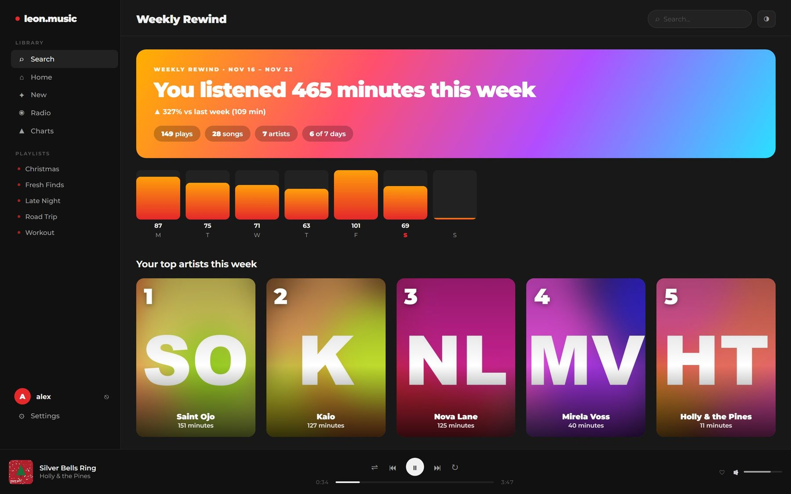
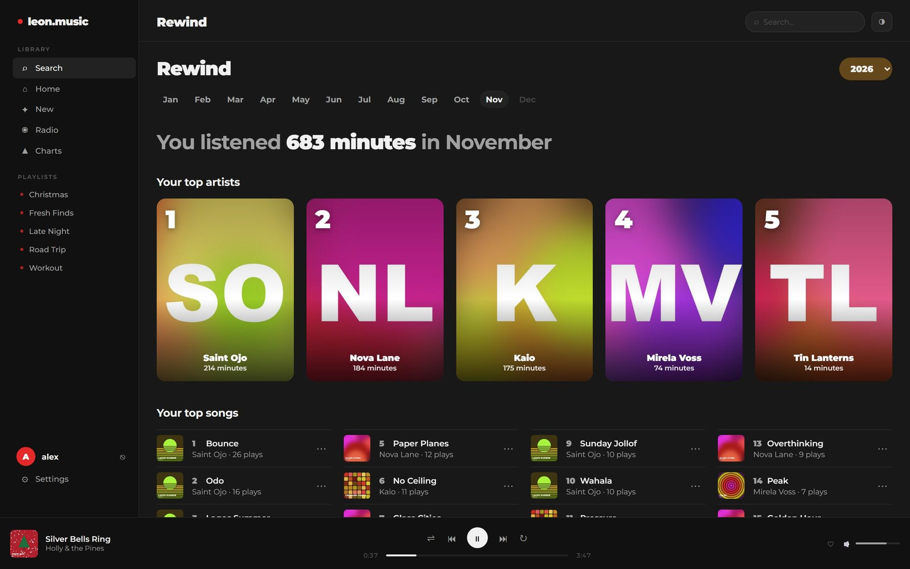
Feels at home on your phone
Open it in any browser on any device, with a responsive layout built for touch.
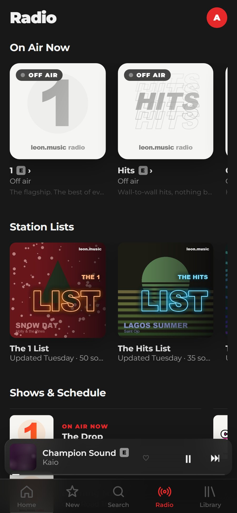
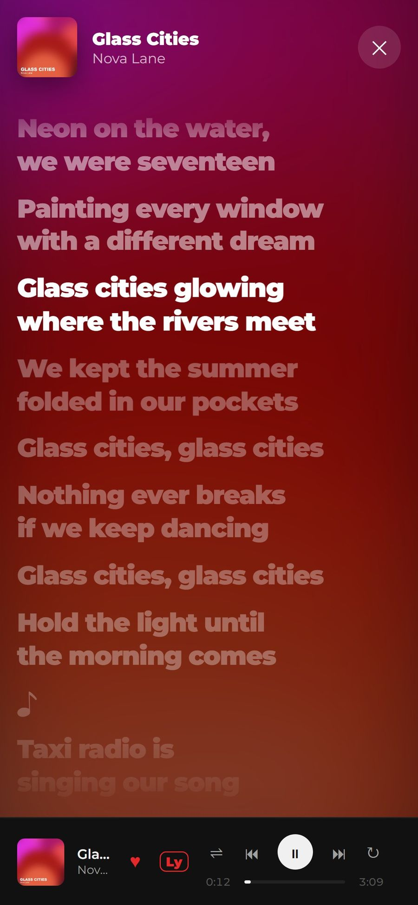
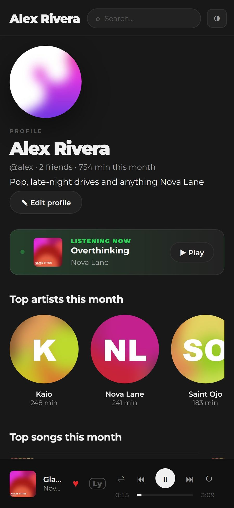
Up and running in a minute
You need Python 3.9 or newer. ffmpeg is optional and lets live radio broadcast every audio format.
# get leon.music git clone https://github.com/weareleon/leonmusic cd leonmusic pip install -r requirements.txt # start it: a tray icon appears and your browser opens python leon_music.py
Point it at your music
Choose your music folder. Each top-level folder becomes a playlist.
Set an admin password
Then add accounts for friends and family in Settings.
Press play
Open localhost:7733 on this computer, or put it behind HTTPS to listen anywhere.
Full instructions are in the documentation.
Make your music feel like a service again
Free and open source under the MIT license. Bring your own music, keep your own data, and invite the people you like.
Download leon.music
Music is better with friends
Everyone on your server gets a profile. Add friends to see what they're playing and get a mix made from their listening.
Sing along, line by line
Tap Ly and the lyrics fill the screen, lighting up in time with the music. Tap any line to jump there.
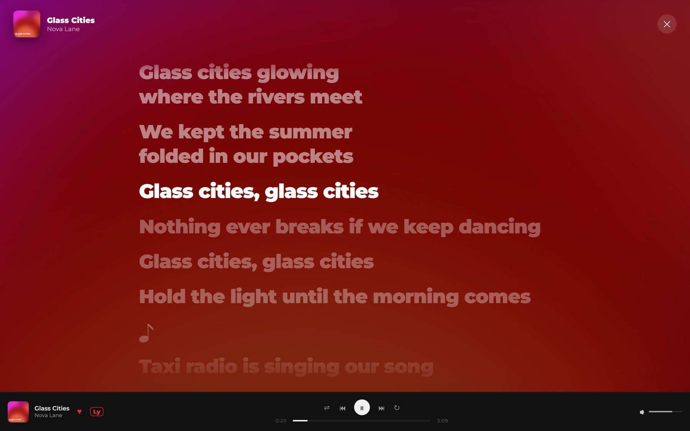